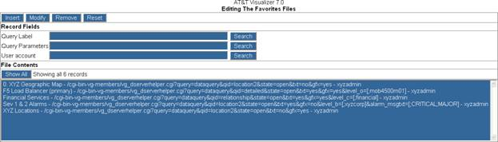

This section describes the management tasks for creating and maintaining Favorites. Favorites are shortcuts to the system navigation to look up alarms and statistics in relation to their location and grouping attributes. Create a favorite by defining a label, query type, and query parameters associated with relationship of inventories.

Figure 10.6 – Favorites File
Key field descriptions are provided in the following table.
Table 10.5 – Favorites File Key Fields
|
Key Fields |
Description |
|
Query Label |
The user created label that will appear in the favorites menu |
|
Query Parameters |
The query parameters |
|
User Account |
The website account that established this favorite |